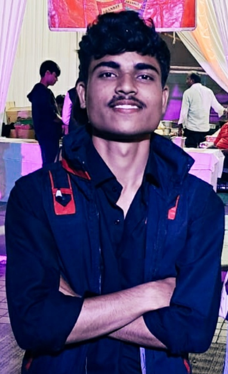
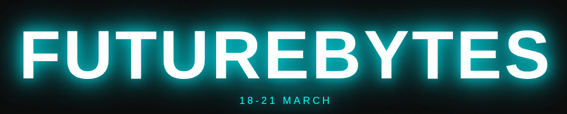

Resume
Amit Raghuse

Summary
Technology Enthusiast, hardworking and disciplined Data Science seeking for the
opportunity to showcase myskills and knowledge. Ability to learn new things quickly and a
good team player. BTech Undergraduate (Computer Engineering)
Work Experience / Projects
- Developed FUTUREBYTES

March 2025 - April 2025
- Enhanced User Interface with Dynamic Visual Effects
- Improved Chatbot User Experience
- Front-End Development and UI Customization
Formal Education
Skills / Certificates
-
Programming and Development
- JAVA , C , Data Structure , OOPs, HTML , CSS , PYTHON LIBRARIES
- Soft Skills
- Team Spirit ,Sports Mindset , Problem Solving , Logical Thinking , Communication
- Certificates
- Generative AI: Tools, Techniques and Applications
- AICTE cohort–9 virtual internship on AI- ML
Awards and Honour
- Runner-Up, VNIT Hackathon: Secured the second position in a university-level hackathon focused on advanced website building and debugging challenges.
- Intercollegiate Sports Recognition: Honored for representing the college in three distinct sports at intercollegiate tournaments, demonstrating versatility and strong teamwork.
- Cultural Achievement Award: Awarded a memento for representing the college in the dance competition at Mood Indigo, IIT Bombay, one of Asia's largest cultural festivals.
Other Links
Contact